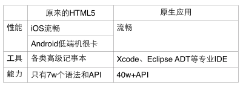

HTML5自出现以来，几经风雨，虽看似很有前途，但实际使用问题太多，DCloud为此踩了无数坑。但我们从未放弃，我们加入了W3C，发起了HTML5中国产业联盟，推出了HBuilder、HTML5plus runtime、mui框架、wap2app框架等产品，直到我们终于可以使用HTML5开发出原生体验的App，并且把这些技术公开给开发者。
HTML5过去被称为有“性工能”障碍，即性能不如原生，工具不如原生、功能不如原生。

HTML最开始其实不是一个编程语言，确实用不着什么ide。
但是发展到现在，7w多个语法，js越来越庞大，真开发一个达到原生水准的App，不是用以前的文本编辑器能搞定的。
目前竟然没有一个开发工具能把7w多HTML5语法提示齐全，这不科学，在原生开发里这是不可想象的，xcode之于iOS，as之于Android，在语法提示、转到定义、重构、调试等方面都非常高效。
作为同时熟悉原生和HTML5开发的我们，我们在开发HTML5时明显感受到效率低下。
我们花费了很大心血建成了最全的HTML5及浏览器扩展前缀语法库，我们也开发了强大的语法解析引擎，然后推出了开发工具HBuilder，使得开发者可以准确、高效的编写HTML5代码。
过去人们怀疑，中国人能做开发工具吗？AST语法树是很难掌握的，尤其是js这种动态语言。现在不用怀疑了，HBuilder的语法提示比很多国外IDE还要好，而且还全免费。
由于我们的极客特质，HBuilder同时被我们打造成了最快的前端开发工具，代码输入法的创新、代码块的优化、emmet的集成、快捷键语法设计、无鼠标操作。。。这些可能低端程序员不感兴趣，但我们乐于其中。HBuilder有句口号：为极客、为懒人、为你。
当然移动App开发也是HBuilder的优势，真机调试、打包发行这些功能并非普通的HTML4开发工具会涉及的。我们认为，如果只是做个网站，HTML4就够了，搞HTML5而不做App，太糟蹋这个技术了。以及云打包还能使得没有mac电脑的程序员可以开发iOS应用。
说完性工能里的工具，再说说能力。
HTML5plus Runtime，简称5+ Runtime，是运行于手机端的强化web引擎，除了支持标准HTML5外，还支持更多扩展的js api，使得js的能力不输于原生。5+ Runtime内置于HBuilder，在真机运行、打包时自动挂载。
业内之前有phonegap/Cordova方案，但是他们自带js api太少了，扩展api需要用原生语言开发，更致命的是这类方案的性能不足。
后来出现了react native方案，但他们自带的js api也一样少，扩展api也需要原生开发。其实不管cordova还是react native，都是作为原生应用的一个sdk出现的。很多公司发现使用react native后，开发效率不升反降，iOS、Android、前端3个团队协作开发甚至不如只用iOS和Android团队。
5+ Runtime分3个层次解决了HTML5与原生的能力差距。
包括二维码、摇一摇、语音输入、地图、支付、分享、文件系统、通讯录等常用API，封装成跨平台的HTML5plus规范，并将规范公开于www.HTML5plus.org，不做厂商私有API。HTML5中国产业联盟目前已经成为工信部的下属单位，而HTML5Plus规范也已经成为行标，并进行了国标立项。
原生API在iOS和Android上各自有40多万，有些API并不常用，而且不具有跨平台特性，比如ios的game center api。太多的API封装到HTML5plus里，会过多增加runtime的体积，但若有需求要使用这些api又很麻烦。
我们有一项突破性的技术来解决上述烦恼—Native.js，一种把40w原生API映射为JS API的技术。
我们可以使用js直接调原生API，语法是js语法，API命名是原生命名。
比如var obj = plus.android.import( "android.os.Bundle" ); 然后obj.xxx，这个xxx属性就完全是原生对象的属性命名。
对于JSer，他一下就有40w API可以用，瞬间感觉无所不能:)
Native.js的教程详见：http://ask.dcloud.net.cn/article/88
假使有一些原生的三方SDK想引入到5+ Runtime，比如身份证扫描SDK，我们提供了5+ SDK方案，把5+ runtime作为一个SDK放入到其他原生App中，用5+ SDK替代webview，和原生层交互通信。（这块类似cordova的设计）
iOS SDK开发教程详见：http://ask.dcloud.net.cn/article/67
Android SDK开发教程详见：http://ask.dcloud.net.cn/article/66
通过HTML5plus规范、Native.js技术以及原生SDK，这3种机制使得5+ Runtime拥有完全不输于原生App的能力。
性工能里最后的重头戏是性能。在低端Android手机上，过去的HTML5无法商用，切页白屏、转场卡顿、下拉刷新不流畅、侧滑菜单不流畅。。。众多问题逼迫开发者只能使用原生技术来做应用。
HTML5 App的性能低下，有webview自身的性能问题，也有前端框架的性能问题。
Webview性能低主要体现在动画效果不流畅，之前举例的转场动画、下拉回弹动画、侧滑动画均是此类。别忘了我们有强大的HTML5plus，既然js和css的动画不行，我们就调用原生API换成原生动画。我们设计了很多原生动画，来解决之前的各种动画不流畅问题。
5+ Runtime还支持nview，即原生引擎渲染界面。但我们没有像react native那样完全抛弃HTML5，而是给Webview增加了titleNView和subNview，这些区域原生渲染的补足，也就是混合渲染，在HTML5渲染不佳的地方用原生渲染补足。让js写的应用性能完全达到了原生效果。参考视频https://v.qq.com/x/page/k05051mc143.html
由于HTML5的默认控件无法直视，我们只能用css把按钮、输入框修饰成原生样式。
另外HTML5的控件比原生控件少很多，比如list、tab、menu、waiting等常见控件，以往都要写很多div和css拼装。这引发了一个前端框架存在的市场。但目前的前端框架性能都非常低，在低端手机上很难达到商用要求，更不用提pk原生效果。
基于这种情况，DCloud推出了开源的mui框架（http://dcloudio.github.io/mui/），它是目前最高性能和最接近原生体验的手机端框架，在github上有上万个star。它的3个特点：1. 体积小，100k左右； 2. 直接使用原生js编写，性能高于普通框架； 3. mui的风格样式是最接近原生样式的，如下图。
随着DCloud的技术能力演进和硬件设备的发展，我们在2017年正式推出了wap2app框架。
手机wap站，能不能快速转换成app，并且达到app的功能体验？
这个问题已经提出好久好久了。好久到，现在大多数人已经不对这个问题抱有希望了。
wap2app框架终于做到了这点，具体参考：http://ask.dcloud.net.cn/docs/#//ask.dcloud.net.cn/article/1244
通过DCloud的系列产品，我们很好的解决了HTML5的性工能障碍，做到了接近原生App的功能和体验，给开发者提供了更多便利。
在iweb 2014大会上，DCloud CEO王安做了主题演讲，系统性的发布了克服HTML5性工能障碍的解决方案，大家可以访问视频（http://v.youku.com/v_show/id_XNzYyNzI3NDQw.html）。
在HTML5的问题得到解决后，这项技术的优势就可以大放异彩，给世界带来巨大的变化。有兴趣的朋友可以阅读这篇文章《HTML5定稿了，为什么原生App世界将被颠覆》
咳咳，此文于2015年补充一条。
《HTML5定稿一周年，你必须要重新认识HTML5了》
但光解决HTML5不如原生的地方，还不够好玩，我们要发挥HTML5的独有特色，让HTML5有超越原生的可能。
DCloud利用HTML5的动态性优势，推出了即点即用、边用边下的流应用；利用HTML5的开放性优势，推出了各种内容直达服务。具体参考DCloud流应用介绍
2015年，DCloud和360手机助手合作，首先上线了流应用。在360手助上获取某些应用，可以秒开而不用下载。
然后DCloud开始推动业内各大公司也支持流应用等动态App类型。
2015年，DCloud给微信团队演示流应用，包括扫码即可获得一个应用、社交分享即可获得一个应用、以及如何直达一个应用的二级页面，3个月后，微信决定立项做小程序。
在DCloud持续的推动下，业内各大公司陆续上线了动态App（各种小程序、快应用）解决方案。
遗憾的是业内主要公司决定自建私有规范，而没有遵循工信部下HTML5中国产业联盟的行业标准，这导致开发者陷入了碎片化开发的困局。
除了各种不同的小程序和快应用，还有iOS、Android、H5等版本需要开发，这对开发者而言已经成了巨大的噩梦。
针对这一情况，2018年，DCloud推出了uni-app，并且这个版本，做到了开发一次，iOS、Android、H5、小程序均支持，为开发者和产业解决了这个大问题。
不管产业如何变迁，DCloud始终为开发者着想，为推动产业进步而努力！